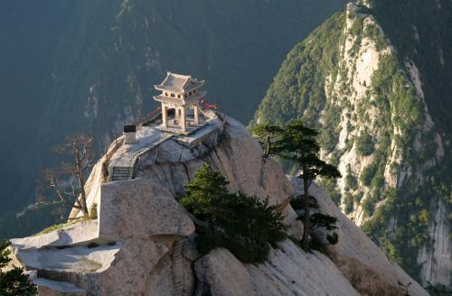
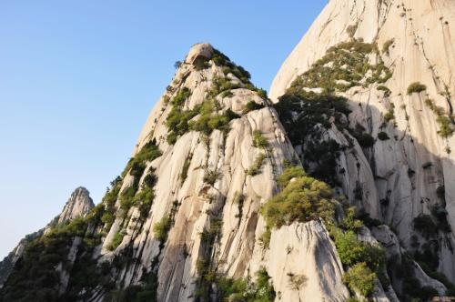
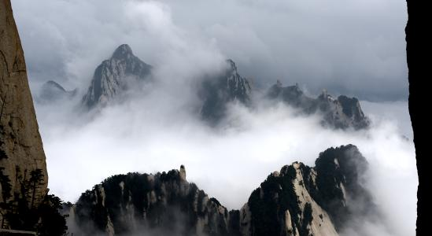
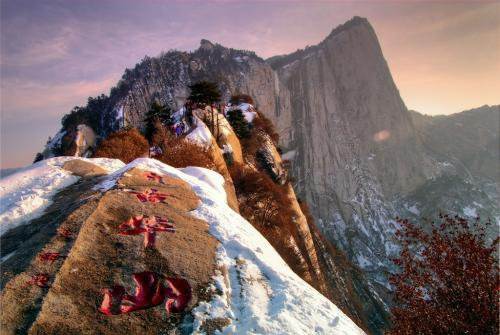
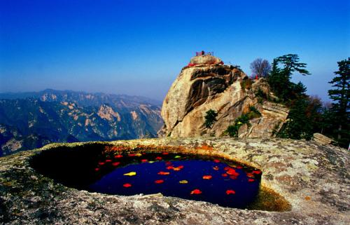
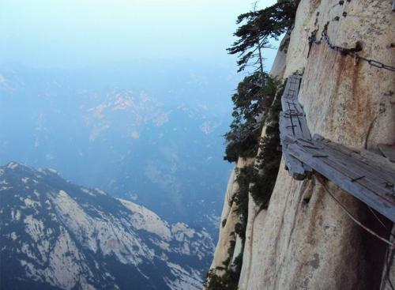

东岳泰山简介
华山（Mount Hua）古称“西岳”，雅称“太华山”，为中国著名的五岳之一，中华文明的发祥地，“中华”和“华夏”之“华”，就源于华山 [1] 。位于陕西省渭南市华阴市，在省会西安以东120千米处。南接秦岭，北瞰黄渭，自古以来就有“奇险天下第一山”的说法。华山是第一批国家重点风景名胜区，国家AAAAA级旅游景区，全国重点文物保护单位，国家地质公园。 [2-4] 华山是中华民族的圣山。中华之“华”，源于华山，由此，华山有了“华夏之根”之称 [4-5] 。这一成果首先被孙中山所引用，创立“中华民国”。据清代国学大师章太炎和历代专家学者考证：华夏民族最初形成并居住于“华山之周”，名其国土曰华，其后人迹所至，遍及九州，华之名始广。 [4] 华山是道教主流全真派圣地，为“第四洞天”，也是中国民间广泛崇奉的神祇，即西岳华山君神。共有72个半悬空洞，道观20余座，其中玉泉院、都龙庙、东道院、镇岳宫被列为全国重点道教宫观，有陈抟、郝大通、贺元希等著名的道教高人。 1982年，华山被国务院颁布为首批国家级风景名胜区；1991年，华山被国家旅游局评为四十佳旅游胜地之一；1999年，华山被中央文明委、建设部、国家旅游局命名为全国文明风景旅游区示范点；2004年，华山被评为中华十大名山； 2011年，华山被国家旅游局评为国家AAAAA级旅游景区；2017年6月29日，华山荣膺“2017中国最受欢迎旅游景区”殊荣。 [6-7] 华山是神州九大观日处之一，观日处位于华山东峰（亦称朝阳峰），朝阳台为最佳地点。“中国黄河50景”之一。
风景展示
  
 
旅行攻略
泰山位于山东省泰安市境内。
最佳旅游时间:每年的4-10月是华山的旅游旺季。农历三月十五日是朝山日，会有盛大的庙会和庆祝活动。
2.华山日出时间:春季5:00-6:00;夏季4:30-5:20；秋季5:00-5:20;冬季6:30-7:30。
3.穿衣及装备:山顶温度比山脚低10°C左右，建议带长外套及长裤。装 备:地图、外套外裤、双肩包、干粮、水、软底鞋(一双好鞋很重要)、手套、手机、相机、电池、遮阳帽、墨镜、手电筒、创可贴及急救药品。
4.华山景区内的消费水平整体偏高，吃饭、住宿费用较高。但华阴县城内的食宿相对较低。
从华山北去景区
1.汽车直接到玉泉院登山口。
2.从华山北下车的旅客出站后，前往小广场上有免费的游览车开到游客中心(不是玉泉院)，分1号线和2号线，早上8点到晚上19点。有一辆绕远，上面的站牌可以看明白，都是免费的。
3.最方便的方法是打车(推荐)，20元一个人。一定要求开导航，并且说清去哪个门，否则会绕门，很麻烦。还有别信司机说的华山封山，索道或道路检修，山上出现自然灾害之类的话
4.晚上七点多就没有公交车了，直接打车去，很方便。
5.从游客中心到达玉泉院(徒步登山口)也有免费的公交车，不知道在哪可以询问工作人员(在游客中心取票)。